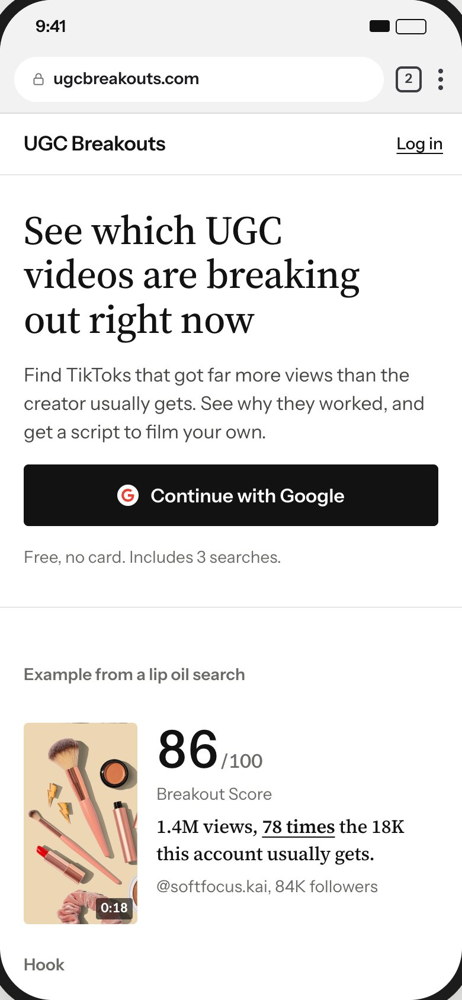
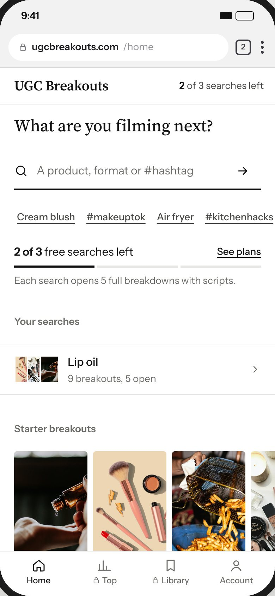
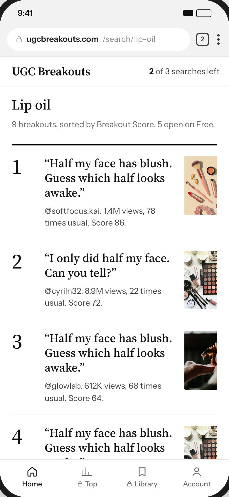
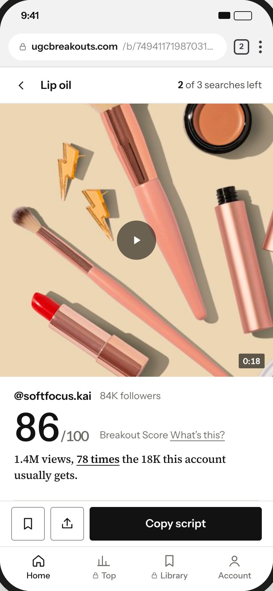
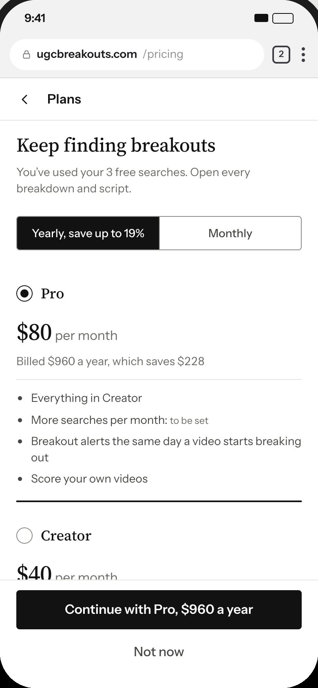
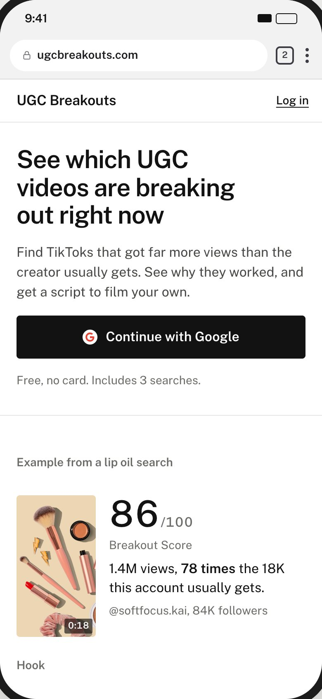
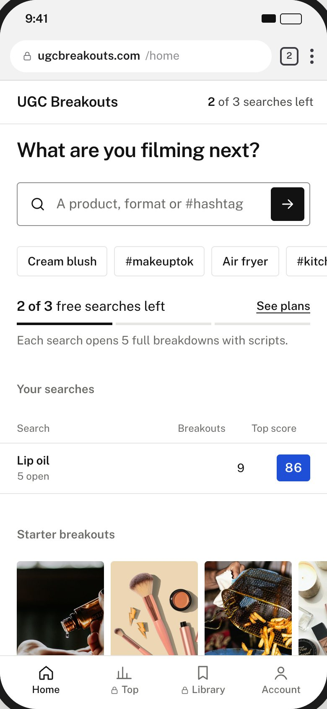
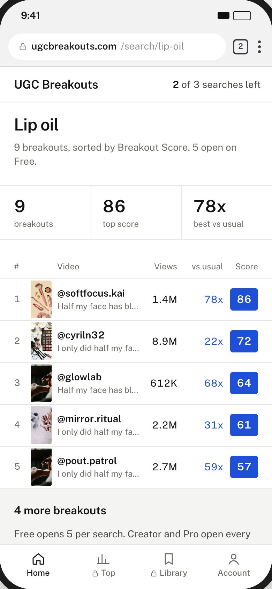
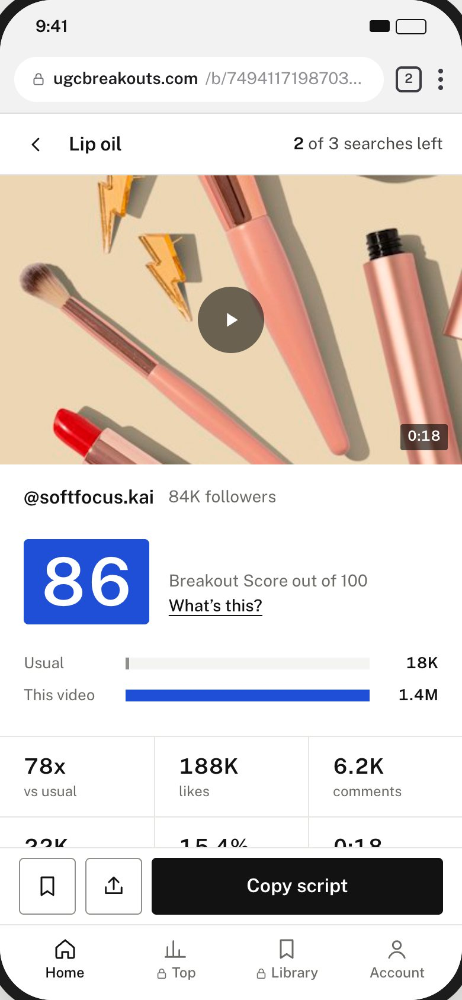
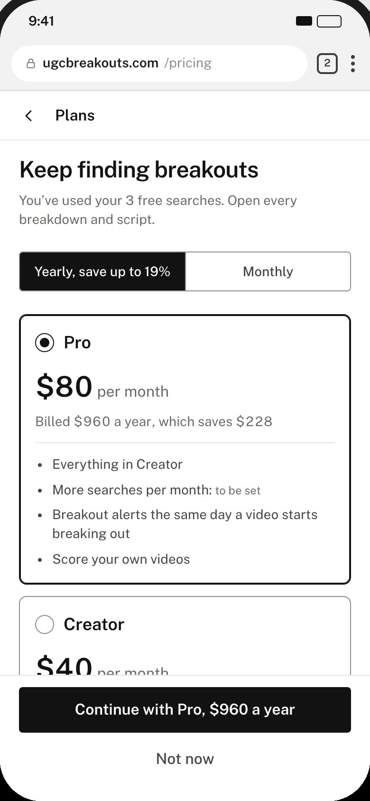

UGC Breakouts 3.0 · 17 Oct 2026
Five looks for UB 3.0
Five screens in five looks: colors, fonts and formatting. The original is the version you saw. A to D are new and follow the same rules, taken from 19 well-made apps and an audit of what made the original look AI-made and bubbly. Each borrows from a specific group of those apps.
Open the prototypeUse the Look switcher on the left to see any screen in A to D. The original is kept as its own prototype.
Original
The first redesign, the version you saw: warm paper, coral buttons, rounded cards and pills.
Try it- Borrowed from
- Your 15 Oct prototype and UB's live brand colors.
- Font
- Plus Jakarta Sans at heavy weights, with code-font labels.
- Formatting
- Cards with soft shadows, pill chips and badges, gold score rings on the thumbnails.
- Trade-off
- The look you said felt AI-made and bubbly. The coral buttons and gold score also fail contrast.
Paper
#F6F2EE · pageCoral
#FF4F5E · buttons, 3.21:1 with white textTeal
#0B7B7F · engagementGold
#C9A227 · score rings


- Borrowed from
- YouTube Studio, Spotify for Artists and Edits, the creator tools UGC creators already use.
- Font
- Instrument Sans: straight letter endings and true aligned numbers.
- Formatting
- Rows with thin dividers, score as 86/100, teal only on the multiplier.
- Trade-off
- The quietest of the four; the thumbnails carry most of the color.
White
#FFFFFF · pageInk
#121212 · text and buttonsTeal
#0A6763 · above-usual data, 6.7:1


- Borrowed from
- Apple Stocks, Robinhood, Linear and Letterboxd. 9 of the 19 reference apps are dark-first.
- Font
- Schibsted Grotesk: a sturdy newspaper grotesk built for a media group.
- Formatting
- Same rows; the score turns green, like a gain in a finance app.
- Trade-off
- 18 of 22 creator tools are light, and light reads better at small sizes, so this may suit a dark mode better than the default.
Black
#0B0B0C · pageOff-white
#F2F2F0 · text, 17.6:1Green
#3DD68C · scores and above-usual data, 10.5:1


- Borrowed from
- Substack, Are.na, Readwise, and the one serif sentence Oura uses to explain a score.
- Font
- Source Serif 4 for headlines and hooks, Instrument Sans for everything else, including every number.
- Formatting
- No accent color. Above-usual data is marked with weight and an underline.
- Trade-off
- Reads more like a publication than a tool; nothing on the page is colored.
White
#FFFFFF · pageInk
#121212 · text, buttons and dataGray
#F1F1EF · quiet fills




- Borrowed from
- The Apple Stocks watchlist (a colored change box per row), the Strava leaderboard and Mercury.
- Font
- Public Sans: the plain, very legible typeface of the US Web Design System.
- Formatting
- The score block is the fastest thing to scan in a list. Blue sits outside the crowded pink, purple and TikTok-red colors.
- Trade-off
- The loudest of the four, with a block of color on every row.
White
#FFFFFF · pageInk
#121212 · text and buttonsBlue
#1F4FD6 · score blocks, 6.7:1 with white text




Our pick: A · Light, with D's score block as an option
Light matches the tools creators already use (18 of 22 open light) and reads best at small sizes. If the score should stand out more in lists, D's blue block can drop into A without changing anything else.
What made the original look AI-made
17uppercase code-font labels above headings
25rounded pills on one screen
18cards with the same soft shadow
27different corner sizes
120pieces of confetti after paying
What well-made apps do
18 of 19keep brand color off backgrounds
16 of 19use no card shadows
11 of 12keep video thumbnails nearly square-cornered, with no badges
10 of 19show lists as rows, not cards
0 of 19use code-font labels
Rules all four follow
- Small corners: 4px for controls, 8px for cards and video.
- No pill badges; ranks, scores and multipliers are text.
- No uppercase labels above headings.
- One accent color with one job.
- Shadows only on things that float.
- Lists as rows with thin dividers.
- No bounce, zoom or confetti; motion only shows state.
- Headlines in one color.
- Plain copy, no exclamation marks.
- Only true pricing claims.
- Every text color passes WCAG AA.
The 19 reference apps

Sources
- Anthropic, frontend design skill (lists the stock AI looks)
- The Fountain Institute, 7 tells that a UI is AI-generated
- Mowgli, Why AI-built apps look the same
- UX Planet, why confetti celebrations backfire
- Labrecque and Milne (2012), color and brand personality
- Nielsen Norman Group, dark mode vs light mode
- WCAG 2.2, contrast minimum
- US Web Design System, Public Sans
- Apple App Store screenshots of the 19 reference apps, 16 to 17 Oct 2026